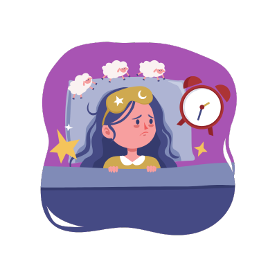

What is Insomnia?

Insomnia is a sleep disorder characterized by difficulty falling asleep or staying asleep, even when a person has the opportunity to do so. People with insomnia often experience poor sleep quality or insufficient sleep, which can lead to daytime fatigue, mood changes, and other health problems.
Insomnia can be acute (short-term) or chronic (long-term). It may be caused by stress, anxiety, certain medications, or underlying health conditions, and it can significantly affect a person's quality of life.
Symptoms of Insomnia
The symptoms of insomnia may include:
- Difficulty falling asleep: Taking longer than usual to fall asleep at night.
- Frequent waking: Waking up multiple times during the night and having trouble going back to sleep.
- Waking up too early: Waking up early in the morning and not being able to fall back asleep.
- Daytime fatigue: Feeling tired or sleepy during the day, despite a full night’s rest.
- Irritability or mood disturbances: Feeling irritable, anxious, or depressed due to poor sleep quality.
These symptoms can interfere with daily functioning and lead to impaired concentration, memory problems, and reduced overall well-being.
Causes of Insomnia
Insomnia can be caused by various factors, including:
- Stress: Work, personal life, or financial stress can make it difficult to relax at night.
- Anxiety or depression: Mental health issues can affect sleep patterns, causing insomnia.
- Medications: Certain medications, including antidepressants, stimulants, and allergy medications, can interfere with sleep.
- Health conditions: Conditions like chronic pain, asthma, acid reflux, or other disorders can disrupt sleep.
- Environmental factors: Noisy environments, uncomfortable temperatures, or irregular sleep schedules can contribute to insomnia.
Identifying and addressing the underlying causes of insomnia can help individuals manage and improve their sleep quality.
Treatment for Insomnia
There are several effective treatments for insomnia, including:
- Cognitive Behavioral Therapy for Insomnia (CBT-I): CBT-I is a structured program that helps individuals change thoughts and behaviors that contribute to sleep problems.
- Sleep hygiene: Practicing good sleep hygiene involves maintaining a consistent sleep schedule, creating a comfortable sleep environment, and avoiding stimulating activities before bed.
- Relaxation techniques: Meditation, deep breathing exercises, and progressive muscle relaxation can help reduce stress and promote better sleep.
- Medication: In some cases, doctors may prescribe sleep aids or other medications to help with insomnia. However, these are typically recommended for short-term use.
- Behavioral modifications: Making lifestyle changes, such as avoiding caffeine, alcohol, and heavy meals late in the evening, can also help manage insomnia.
In many cases, a combination of these treatments is most effective in addressing insomnia and improving sleep quality.